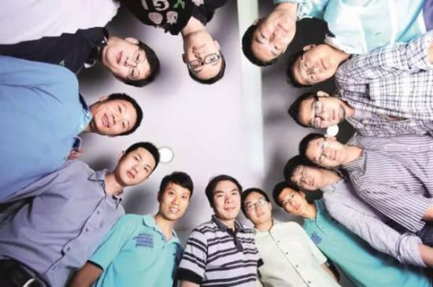
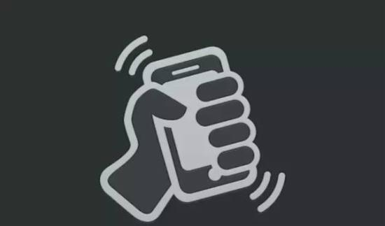

每一个不善沟通的孩子
都有强大的帮助别人沟通的内在力量

▼
他是广州深夜里最大的Kent(香烟品牌)消费者
沉默到像迷一样的男人
中国为数不多具有人文气质的产品经理
他是那种因为喜欢《蓝莲花》歌词
就向许巍买下版权，挂在QQ邮箱入口的人
▼
如果世界上又出现了什么新鲜的APP应用
在发布后的48小时之内，如果你也下载尝鲜
可能你会遇到个名叫Allen的人
如果这人沉默不语，甚至连头像都没有
那么你也许遇见了张小龙
▼
?19年前，即1997年，他凭一己之力写出Foxmail这样的神级产品，造福了400万邮箱用户。
?8年前，即2008年，他带领团队锐意创新，以七星级的产品追求重塑了QQ邮箱，使这一产品起死回生。
?5年前，即2011年，他成功开发微信这一划时代的产品，开创了中国移动互联网市场。
?2016年，微信活跃用户已高达6.97亿，用户遍布世界，估值超过5000亿元。

▲张小龙和他的团队
如今47岁的张小龙被称为微信教父，正式头衔是腾讯公司高级执行副总裁、微信事业群总裁，中国互联网界神一样的存在。
20年前，他还是个无业游民，靠给别人写点程序赚钱。
初露锋芒的学生时代
郁郁不得志的技术天才
大学时代的张小龙，聪明、会玩、懒散却成绩好，这大概就是同学眼中“最讨厌的人”。
同学眼中的张小龙：
“我认识小龙时，我们正做数字钟实验，他是全年级最快实现的。他是电子线路实验课老师课堂上点名表扬过，也是该课程免试而又被评为最高分的学生。”
“他是我们之中最早学习C语言的人，当时C语言才刚刚诞生。”
“不要误以为小龙只是写程序厉害，其他如网络、通信、数据库管理等方面，只要稍加接触，就是一流高手。”
“求学期间，张小龙的兴趣爱好十分广泛，无论玩什么，只要稍加练习，总能达到业余高手水平，围棋、桌球、网球、保龄球，电脑游戏，玩起来总是在周围人中最厉害的之一。”
“小龙无论在人品、精神还是智能方面，我都由衷地敬佩他。 ”
1994年秋，25岁的张小龙研究生毕业。因为不喜欢沉闷、死板的氛围，他放弃了到国家电信机关工作的机会。彼时，国内的互联网行业刚刚起步，张小龙斗志昂扬地前往广州，投身互联网大潮。
张小龙先后在两家公司负责程序开发，尽管做不错，但他对按部就班的生活感到厌倦。他承认自己是个懒散的人，他只喜欢天马行空的生活，不愿待在一个大公司中，为一个软件数以千万行计的程序写其中的若干行。
关于张小龙的性情，下面这件事你得知道：
一位接近张小龙的人士说，张小龙加入腾讯后，每周要去深圳参加例会，他总是以“起不来”为借口不去，马化腾说：“以后让我的秘书叫你起来。”后来张小龙又说：“路上太堵，怕赶不上。”于是马化腾每星期都派车来接张小龙，直到他再也找不出任何借口。
人民日报眼中的悲剧人物
1996年末，不善言辞的技术天才张小龙，在大公司做小齿轮的同时，决定要做一款属于自己的软件。
白天上班，晚上写程序。华灯初上，张小龙就把自己锁在屋里，一边抽烟一边敲击键盘，直到夜色深深。他像个孤独的艺术家，精心雕琢着自己的作品。有时候，仅仅为了将程序变小几百个字节，就要花上一整晚的时间。
1997年1月，经过几个月的奋战，张小龙终于完成自己的作品——一款名为Foxmail的邮箱软件。Foxmail轻便灵活、运行稳定。毫无财富企图心的张小龙将这款软件完全免费推向市场，一经推出便获得巨大成功，被评为五星级软件。

▲Foxmail界面
1997年，时任《电脑报》记者、后来的多玩网创始人李学凌曾描述：“只要你站在黄庄路口，大喊一声，我是Foxmail张小龙，一定会有一大群人围上来，让你签名。”4年之后，Foxmail用户量已达到200万，而腾讯当时只有10万用户。
然并卵。
拥有几百万用户的Foxmail不能给张小龙赚到一毛钱，因为它完全免费，而且张小龙因为沉迷于Foxmail把工作辞了。
2000年3月26日，就连《人民日报》也开始担心这位技术天才的生计问题，发表了一篇题目为《免费软件饿着肚子挥洒冲动》，把张小龙描述为“互联网大潮涌动下的悲剧人物”。
Foxmail差点15万元贱卖给雷军
周鸿祎很疑惑：
这样的一个人怎么就做出了微信
1998年9月，刚刚出任金山总经理的雷军联系张小龙，希望购买Foxmail。张小龙随意给出15万元的报价，雷军直接同意。但意外的是，仅出任金山总经理一个月的雷军因事务缠身，负责接洽的人不了解Foxmail的价值，竟忽视了这件事情。
▲仅仅过了2年，Foxmail就由15万涨到1200万
1998年的秋天，周鸿祎经人引荐第一次在广州见到了张小龙。张小龙和十几个人挤在一间小破办公室内，周遭烟雾缭绕。
周 鸿袆还当时是方正软件研发中心的一名副主任。跟张小龙认识后，偶尔到广州时会和张小龙一起买盗版碟。周鸿祎说，当时已经在广州生活了五年的张小龙，不会讲 粤语也不会砍价，一直被当“水鱼”宰。张小龙什么都看，但他总是会忘记他看过什么买过什么，下一次再买碟时你会发现他买的还和上次一样。
周鸿祎说，他经常批驳张小龙，Foxmail没有商业模式，说要加广告，要盈利。张小龙说为什么非要这样?只要有用户，有情怀就好了。每一次争论，都是张小龙以长时间的沉默来结束。

▲让龙哥告诉你：情怀是大大地值钱！
张小龙把微信做成后，周鸿祎很疑惑：“这样的一个人怎么就做出了微信呢?”
第一桶金赚了1200万，却愈加失落
如此挣扎了数年后，张小龙的命运突然发生了反转。2001年4月，博大公司宣布以1200万元收购Foxmail，并任命张小龙为首席技术官。
消息宣布后的夜晚，他却写下了一封充满伤感情绪的信，在信中将Foxmail比喻为他精心雕塑的艺术品：
“从灵魂到外表，我能数得出它（Foxmail）的每一个细节……在我的心中，它是有灵魂的，因为它的每一段代码，都有我那一刻塑造它时的意识。我突然有了一种想反悔的冲动。”

艺术家张小龙一直是孤独的创作者，过去他走得很顺，直到这条宽阔的赛道中出现了障碍物——商业和盈利。当初写Foxmail，是兴趣使然，挑战驱动。当软件写成，需要一点点完善时，他已失去兴趣。
在被博大收购后的5年，他在江湖上几乎销声匿迹，与他同一时代的很多程序员、产品经理已成为互联网大佬。
卖身腾讯，却完美逆袭
得到马化腾的重用，他终于可以大展拳脚
2005年，上市后的腾讯并购博大，他再次为作品陪嫁，踏进腾讯。
当时，腾讯正面临MSN的威胁，国内社交软件业战火蔓延。作为当时生态圈中的重要一环，邮箱一直是腾讯的软肋，用户体验极差，马化腾自己都不愿使用。
在邮箱领域，张小龙已经是大师级别的人物，马化腾对他寄予厚望。
然而，久负盛名的张小龙在接手QQ邮箱之初，却交出了一份令人失望的答卷。由于一味模仿MSN和Gmail，加之沿用此前的客户端思维，新一代QQ邮箱犹如Web上的拖拉机，笨重无比、速度超慢，被网友骂又烂又差。

▲张小龙和他的团队
2006年初的一天，张小龙指着迪拜帆船酒店的画，对团队说：我们要做一个最好的邮箱，七星级邮箱。他说完后，会场传来了零星的笑声。
他将快速、简洁确定为产品核心，带领团队将QQ邮箱的内核全部推倒重写，并要求所有人踏踏实实研究用户需求。
2008年，QQ邮箱重获新生，荣膺腾讯公司七星级产品。
从关注技术，到关注人性
漂流瓶之父的成功，源于他大学时失败的社交
2010年9月，QQ漂流瓶正式上线。在这款应用中，张小龙捕捉到大多数人内心深处的孤独感，他试图通过陌生人交友这一方式来迎合众人的需求。
这款应用获得了空前成功，漂流瓶每天的发送量很快达到骇人听闻的1亿次，直接将QQ邮箱送上全国第一的宝座。

▲漂流瓶之父
2011年，张小龙回母校时说，漂流瓶的创意源于自己大学时代失败的社交经历。在那个男女比例高达7:1的工科院校，孤独是张小龙和室友们的常态。
漂流瓶的成功给了张小龙很多启示，之前他关注的是技术，这之后，人性需求成了其产品的新核心。
两个小时与马化腾商定微信
2010年10月，kik的App上线15天就收获了100万。kik是一款基于手机通讯录实现免费短信聊天的软件。一天晚上，张小龙在看Kik类的软件时认为：“移动互联网将来会有一个新的IM，而这种新的IM很可能会对QQ造成很大威胁。”
他觉得自己有义务阻击腾讯的潜在对手，于是，他连夜给马化腾写了封邮件，建议腾讯做这一块业务。马化腾也没睡，很快给他回了封邮件：马上就做。（这封邮件成了微信的开始。）
▲这就是大师和大师的默契吧
“这TM是个奇迹！”微信产品总监曾鸣这样评价微信的成功。
曾鸣是微信13名创始团队成员之一，他说当时包括张小龙在内的所有人都不知道要把微信做成什么样，更何况这些成员中还有一半是毫无经验的实习生。
但有一件事是确定的：张小龙对于产品的偏执超乎想象。2010年前后，腾讯内部还有另外两个团队也在开发类微信产品，但是他们忌惮会破坏和运营商的利益关系，压力之下这些项目都被暂缓了，张小龙则继续不管不顾地向前推进。
2011年1月21日，微信1.0上线。
▲张小龙希望传递微信的用意：人很孤独，需要沟通。
每次看到知乎上人在讨论为什么启动画面是一个人顶个球，我就很乐。——张小龙饭否日记。2011-09-20 18:08
微信在8个月里就横扫了整个市场，比它炫的没它简单，比它简单的没它快。
曾鸣说，张小龙没有方法论，也从来没有理性地说出过一二三四来。他提出一个观点，当时你会觉得也许这是对的，但是后来每次都被证实，这真是对的。
无数的咔嚓声中
他操控着千万颗寂寞之心
2011年10月1日，微信3.0上线，摇一摇成为杀手级武器。人们只需摇一摇手机，就能找到千里之外同时摇手机的人。该功能很快引起受众热捧，日启动量超过1亿次。

在广州研发部内部对微信摇一摇这项功能有个专门的称呼：撸一撸，这是人类最原始的姿势，最原始的，体验往往是最好的。
“摇一摇”的“咔咔咔”声音也是张小龙精心挑选并设计的。“这个枪声，你可以说是一种性感的认识。对于男生来说，它甚至是有暴力的暗示，这很爽”。他透露，枪声的灵感可以追溯到他玩CS时的体验。
张小龙大学时接触到的弗洛伊德思想——“弗洛伊德说人的所有动机都来自性的冲动”，这给他很多启示。
他在腾讯一口气做了8个小时演讲
最后却称：“我所说的，都是错的”
2012年7月24日，从下午2点多到半夜11点多，张小龙在腾讯内部做了8小时20分钟的演讲，178页的PPT，他一直滔滔不绝地讲，根本不给人提问和打断他的机会。
演讲主题是《微信背后的产品观》。腾讯为此开设17个分会场，同步直播讲座，参加者超过1700人。
演讲片段在网上被无数人传阅，里面谈到哲学和艺术，谈到性和暴力，对人性的理解，他说做产品就是要让用户爽，就像上帝一样。
有趣的是，张小龙这次演讲的结语是：“我所说的，都是错的”。
张小龙语录：
1、产品不仅仅是技术，艺术则是更重要的部分。
2、很多大公司能够过技术这一关，但它们缺乏的是艺术，缺乏的是哲学层面的思考。
3、一个好产品是一个用完即走的，一个好产品不是黏住用户，而是尽量让这个用户离开你的产品。
4、大部分的所谓创新，都是把问题搞复杂化而已。
5、一个产品，要加多少的功能，才能成为一个垃圾产品啊！
6、你问我们和竞争对手比有什么区别，我说我们没有他们那些臃肿艳俗的部分。
7、一个被人预见必然会成功的产品，必然会是个失败的产品。
8、还是你们用户爽，哪里爽到哪里，苦的是做互联网的，要整天分析你们的阴暗心理好让你们更爽，还不能明说。
9、人要成功很难，比成功更难的是，知道自己的成功是偶然的。
10、多少艰苦不可告人。
最后，以张小龙在饭否日记上的一句话结束本文：
这么多年了，我还在做通讯工具，这让我相信一个宿命，每一个不善沟通的孩子都有强大的帮助别人沟通的内在力量。
- 推荐图文
- 推荐人物
- 推荐企业